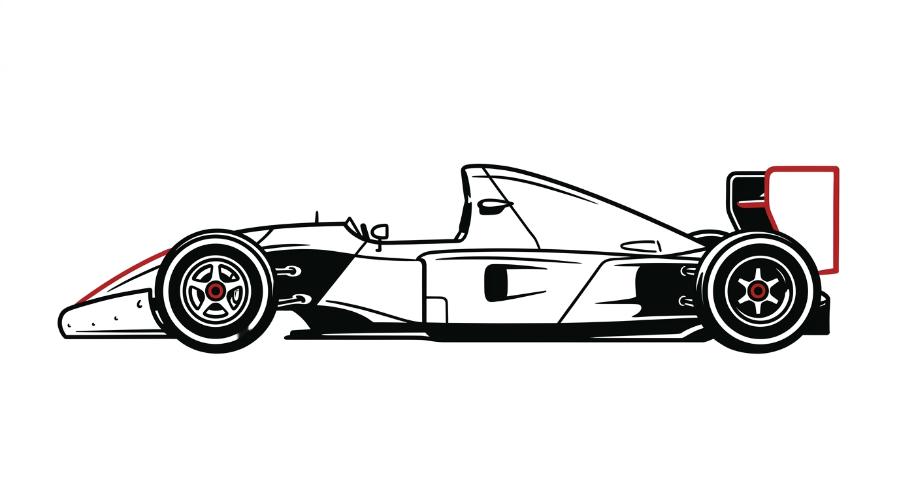

Quando o carro sai de cena, o resto da landing começa. Este é só o laboratório do efeito, isolado da LP no ar. Quando aprovar, porto esse hero pro lp/index.html com o mesmo motion do design system.
lp/index.html